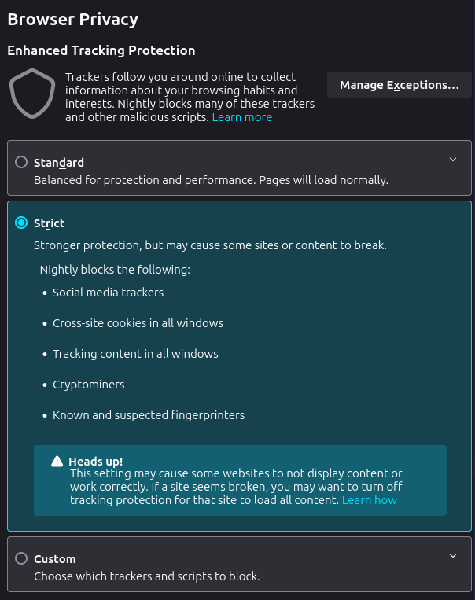
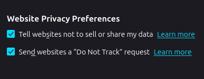

<< Back
Escaping Google's monopoly
22 November 2024
On 20 November, the U.S. Department of Justice submitted a court filing demanding that Google sell its browser Chrome and be banned from pursuing contracts that make its search engine the default on smartphones and laptops. This comes amid an ongoing effort to break up Google's domineering monopoly on the online search market, with a federal judge already having ruled that Google "is a monopolist, and it has acted as one to maintain its monopoly." (Google has said they intend to appeal that decision, though it remains unclear to what extent.)
For a while now, as that legal fight has been under progress, I've been sitting with an ick about Google's overwhelming control over my daily online life — not to mention its exploitation of the resulting data it collects for its own profit, privacy be damned. Everywhere I go, on any public or work device I use, Google Chrome is always a default; I'm forced to use Google's suite of services (Gmail, Drive, Docs, ...) at my university; Google is the default on my iPhone's browsers.
Sometime last month, that ick finally pushed me to act. But escaping Google's grasp was even harder than I initially thought.
Below I break down the steps I took to try that regardless, as well as additional measures I'd recommend to maximize privacy.
Step 1: Firefox
This one is a no-brainer. Even in its default state, it's still a major improvement from Chrome. But it's only as good as its configuration, so here's some quick additional steps:
-
Switch tracking protection to Strict. In Settings > Privacy (about:settings#privacy).

-
Tell websites not to sell or share my data. Firefox, as with other browsers, uses Global Privacy Control (GPC), which sends a signal to businesses that a user does not want their personal information to be sold or shared. (Mozilla itself was involved in GPC's development.)
-
Send websites a "Do Not Track" request. This sends a similar signal to every website you visit and its third-party partners that you do not want your browsing behavior tracked. But websites don't have to comply with that request.

-
Get the uBlock Origin extension. No browser is complete with uBlock. It's a content filtering extension that's stunningly effective, less memory-intensive than its competitors, and customizable.
(I personally use Firefox Nightly, but only because it has vertical tabs on a sidebar, as opposed to horizontally over the top bar. I wouldn't necessarily recommend it beyond that feature; if you do want to switch to that, be sure to turn off allowing Nightly to send technical and interaction data to Mozilla (Settings > Privacy) if that's something you're uncomfortable with. It is turned on by default.)
Step 2: Startpage
Startpage is a privacy-focused search engine that has honestly served me well in 99% of my use cases. It serves Google search results without* tracking your activity and selling it to third parties.
* Back in May, a forum thread on PrivacyGuides, a reputed "privacy advocacy community" that had vetted and publicly recommended Startpage, was on the verge of panic after a Reddit user alerted that Startpage had apparently started to fingerprint users. The entire thread is somewhat of a nerve-wracking read; but after some more investigating, and Startpage themselves intervening to do damage control, all but a few of the users seemed convinced that the fingerprinting was for the limited use case of bot detection/abuse prevention. For that reason, and this thread being the last major concern about the service to my knowledge, I keep this recommendation in this post.
Another consideration, from PrivacyGuides themselves:
Startpage's majority shareholder is System1 who is an adtech company. We don't believe that to be an issue as they have a distinctly separate privacy policy. The Privacy Guides team reached out to Startpage back in 2020 to clear up any concerns with System1's sizeable investment into the service, and we were satisfied with the answers we received.
Why not DuckDuckGo or Brave?
Consider this reply from Reddit user u/lo________________ol:
Way back in 2016, [DuckDuckGo] promised to remove banner ads from websites and replace them with their own, basically trying to extract money directly from websites without the consent of their owners
In the same year, [DuckDuckGo] CEO Brendan Eich unilaterally added a fringe, pay-to-win Wikipedia clone into the default search engine list.
In 2018, Tom Scott and other creators noticed Brave was soliciting donations in their names without their knowledge or consent.
In 2020, Brave got caught injecting URLs with affiliate codes.
In 2023, Brave got caught installing a paid VPN service on users' computers without their consent.
I've probably missed a few.
Search engines are their own rabbit holes; if you want to go further, you can check out the metasearch engine SearXNG, and/or rotate between multiple search engines so that your search history can't be tracked to a single place. But realistically, for most people that's a lot to ask for.
Step 3: Proton Mail
For most purposes, Gmail is secure enough. But security and privacy are separate things — as in, one is about the ability of an unauthorized actor getting to your data, and the other is about an authorized actor getting it and selling it for profit. Until 2017, Google had been scanning users' emails within the free consumer ecosystem to serve targeted ads, before it stopped the practice to merge policies with its corporate-facing service. And that change only happened, after at least 13 years of selling the info, because "some current or prospective paying enterprise customers," not free-tier consumers, "were uncomfortable with this practice," said Seth Schoen, of the digital rights group Electronics Frontier Foundation, in an interview with the New York Times.
Scanning of Gmail messages nonetheless continues, at Google's discretion, though presumably that information is only for internal use and not for advertisements. Whether one is to trust such claims from Google is, at this point, a matter of opinion. I personally don't feel like risking it; so I moved to Proton Mail.
Unlike Gmail, Proton uses client-side encryption — that is, messages are encrypted before they're sent to mail servers, meaning Proton couldn't scan the contents of that message even if they wanted to. Since Proton itself is headquartered outside the U.S., in Switzerland, your email data is regulated under the much stricter GDPR framework, and falls outside of the purview of U.S. (and Five Eyes, for that matter) surveillance. It's certainly not as keen as Google is to hand over data to law enforcement, and it only complies when absolutely necessary. (It was only last month that Google decided it would no longer make its users geolocation data easily available to authorities.)
Considerations
If I were born yesterday, and I were able to use Proton Mail as soon as I left the womb, perhaps that would have been ideal. Clearly that is not the case. Since childhood, I've had several Gmail accounts, and at this point my current account is linked to so many third-party services via federation that it's almost impossible to track down the extent of it, or control it, unless I deleted the account entirely — but then I wouldn't know what I'd be losing access to, including any crucial services I happened to forget about.
That's not to mention my university forces me to use their own Google Workspace, which is neither here nor there.
But all of this is (mostly) out of my control by this point. What I can do is move forward with Proton. I've switched most of my frequently used third-party accounts — LinkedIn, my bank accounts — and other work-related miscellanea to my Proton email. I have a separate "throwaway" email that I use for other things in my personal life, like Amazon, Twitch and various newsletters that I don't want to clog up my work email. I also set up that email so messages sent to my Gmail are forwarded to Proton. So far, that system is working out quite well.
As with all things, this is just the beginning of another rabbit hole, along which you may find things like addy.io, an email forwarding service that gives you an obscured email address so you don't have to unnecessarily give out your actual email. However you deep you may fall into that rabbit hole, Proton Mail is nonetheless a good start.
Step 4: LibreOffice / WPS
Hairs have been standing on end as of late as Google is diving deeper and deeper into the AI/ML space, and many who use Google's suite of document editors are becoming suspicious as to whether their data will be used to train generative models without their consent or knowledge. So far Google is vehemently denying this, but whether we can trust them is another matter entirely.
LibreOffice is the much touted, community-driven alternative to Google's (and Microsoft's) services. It has many of the same features that those more mainstream suites have, while allowing for a degree of safety knowing these files are locally hosted and not scanned by a corporation as Google Docs are.
For most use cases, LibreOffice works just fine. If you're looking to do something that's fairly specific, and that does work on either Google or Microsoft — e.g. using Morph transitions between slides on PowerPoint, that's something that will be a lot more difficult to accomplish. Another drawback is that imports of .docx, .ppt etc. files are not always perfect, and it'll be annoying to fix it. If you have a job or other obligation that would require you to then reupload a finished file to be opened with Microsoft or Google, it'll then be need to fixed again after that fact. But in more isolated use cases where that doesn't matter, it works just fine.
In terms of quality, WPS is a much better alternative that I've personally been using. Its knockoff of PowerPoint even has equally effective Morph transitions, which impressed it. But a huge caveat is that as a whole it isn't open-source, and it's developed and maintained by the Chinese software company Kingsoft. Take that how you will. The Linux version, at least, is community-operated as of 2019, so if you're a Linux user you can still use it with a reasonable degree of reassurance. Still, be wary of potential exploits through update mechanisms for WPS.